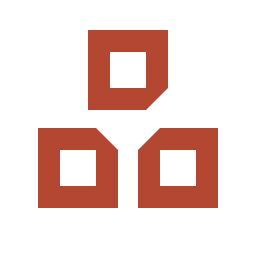
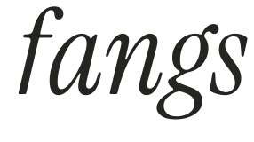
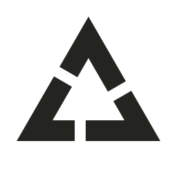

01 / 品 · 三窗推荐方向   三个等大的窗组成“品”的结构，也组成三角。Taste 有了中文里的记忆点，Build 与 Sell 和它平等地构成整体。向中心削去的角，给三者之间留出呼吸。 更适合作品集的签名与小印记；三角关系较含蓄。 下载朱砂 SVG ↗
02 / 三页相生三角更直接  三片同形折页旋转接续，共同围出三角留白。每片都有一长一短两条边，让三种能力之间有持续传递的方向感。 三角之力最直接，但也更容易让人想到回收循环符号。 下载墨黑 SVG ↗